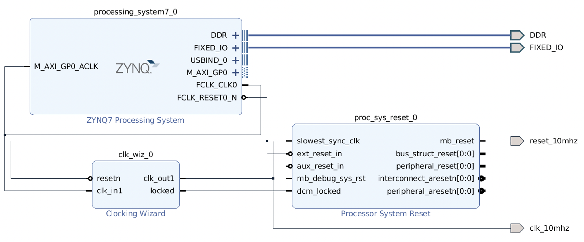

Adding Block Designs
Many FPGA tools additionally come with their own libraries of IP that users can include in their designs. In Vivado, these are known as block designs. Block designs include some helpful hardware, such as protocol adapters, as well as other resources like clock generators.
Board Dependency
The resources available will largely vary between boards; accordingly, this section is board dependent. If you have another board, not all of the same IP blocks will be available
Here, we’ll change the frequency of our clock to slow down our counter a bit from the default of 50MHz
Creating a Block Design
Here, we’ll create a new collection of IP to generate a slower clock.
First, start by creating a new block design
Creating a Block Design
On the left, in Flow Navigator, under IP Integrator, select Create Block Design:
Name the design
clk_genHave the directory be the default
Local To ProjectKeep the default source set of
Design Sources
This will open up the Block Design window, with a few new tabs:
Design: The design hierarchy of our block design
Diagram: A visual block diagram of the design
Address Mapping: The addresses used for address-mapped IP blocks (if we were using any)
Next, let’s add some blocks!
Adding IP
In the Diagram tab, click the + icon or right-click and
select Add IP. Search for “Clocking Wizard”, select the
result, then click Enter to instantiate it. Repeat this process
to instantiate a “ZYNQ7 Processing System” and a “Processor System
Reset”. When you instantiate the former, a banner will appear
titled “Run Block Automation”; click on this, and run the
automation, ensuring that Apply Board Preset is checked.
This will create DDR and FIXED_IO connections; this
is expected. See Appendix A: Using the Zynq7 Processing System for more
details.
In the Diagram tab, you can now see a block diagram of our new IP blocks. Additionally, our hierarchy in the Design tab has been updated.
Let’s make some connections between these IP blocks!
Connecting IP
In the Diagram tab, hover over the FCLK_CLK0 pin of the
ZYNQ7 Processing System, then click and drag to start making a
connection. Drag this close to the clk_in1 pin of the
Clocking Wizard; once you get close, Vivado will recognize
that FCLK_CLK0 is a clock output, and clk_in1 is a clock
input, and will snap to that connection. Release your mouse to
connect the two, then repeat to connect the following pins:
FCLK_RESET0_Nof the processing system toresetof the clocking wizard andext_reset_inof the system resetM_AXI_GP0_ACLKof the processing system toFCLK_CLK0of the processing system (just to avoid errors later on)clk_out1of the clocking wizard toslowest_sync_clkof the system resetlockedof the clocking wizard todcm_lockedof the system reset
We now need to customize our clocking wizard to get our desired frequency. While we could directly edit the block’s configurations in the Properties window, it’s far more clear to edit them with the Customize Block tool.
Customizing Our Block
In the Diagram tab, click on the Clocking Wizard, then click the wrench icon, or right-click and select “Customize Block”:
Under “Clocking Options”, under “Input Frequency”, switch from “Auto” to “Manual”, then set it to 50MHz (the frequency of
FCLK_CLK0from the processing system)Under “Output Clocks”:
Change the output frequency of
clk_out1to 10MHzAt the bottom, change the reset type to “Active Low”
Click OK
Finally, we need to create the external interface for our design!
Adding Ports
Right-click in the Diagram tab, then click Create Port (note that Create Interface port would allow us to create a particular kind of interface/bundle of signals, if we wanted)
Name the port clk_10mhz, make the direction Output, and
make the type Clock. Click OK
This should create a new pin in the block diagram. Connect it to
clk_out1 of the Clocking Wizard. Repeat this process to
create an output named reset_10mhz connected to mb_reset
of the system reset
At this point, our block design is finished! It should look like this (you can use the reload icon to make the block design layout look nicer, if you wish):
{kind=link}
Vivado does not automatically save block designs for us (notice
the star in the upper-left hand corner); do so either with
Ctrl+S or File -> Save Block Design
Finishing Up
There are a few last things we want to do to finish up our block design:
Validation: Vivado can help validate our block design, to try and catch any obvious mistakes. Click on Tools -> Validate Design. You may get some warnings about the DDR interface (since it uses unconventional timing), but the design should otherwise be good!
Generation: We additionally need to generate the design files for our block design. On the left-hand side, in Flow Navigator, under IP Integrator, click on Generate Block Design. Click Generate in the pop-up. Vivado will think for a bit, then click OK when it’s done.
The design files have now been generated for our design! If you go to
the Sources window, under our CLK_gen block design, you should
now see CLK_gen.v, which is the Verilog interface for our design.
Examining the CLK_gen module (although it’s a little messy), you
should find an output signal named clk_10mhz, and
an output signal named reset_10mhz (as well as the DDR and
FIXED_IO ports); these are our generated signals!
After these steps, our block design will need to be saved again, then you can click the X in the top-right hand corner to close the block design and return to the normal view.
Creating A Block Design
Either from Tools -> Run Tcl Script or from the command
line (shown below), run the make_clk_gen.tcl script
% vivado -mode batch -source ../scripts/block_design/make_clk_gen.tcl
Inspecting this Tcl script, we can see that most of what it does is
call another script named CLK_gen.tcl. This script was dumped by
Vivado; after creating the block design in the GUI (with the block
design open), I used File -> Export -> Export Block Design to
export the entire design as a Tcl script. This allows anyone else
to perfectly recreate the design by running that script, and can
be a great way to share block designs.
The default script does check and fail if you’re using a different version of Vivado (to ensure compatibility), but if you’re using a later version, it’s probably safe to remove this check.
Connecting to Our Design
To use our block design, we can instantiate it like any other RTL module. Let’s create a top-level file to connect our block design and gray code module!
Creating a Top-Level File
Create a new design source file (either with your preferred code editor,
or through the Vivado GUI with File -> Add Sources, choosing a
design source, and “Create File”) named top.sv with the following
content (including connections for the DDR and FIXED_IO ports;
see Appendix A: Using the Zynq7 Processing System for more details). Note that you
may have to change the capitalization of clk_gen, depending on how
Vivado saved the block design name:
// =======================================================================
// top.sv
// =======================================================================
// Our top-level design file
module top (
input logic en,
output logic [3:0] gray_count,
// ---------------------------------------------------------------------
// Processing System Connections
// ---------------------------------------------------------------------
inout logic [53:0] mio,
inout logic ddr_vrp,
inout logic ddr_vrn,
inout logic ddr_web,
inout logic ddr_ras_n,
inout logic ddr_odt,
inout logic ddr_drstb,
inout logic [3:0] ddr_dqs,
inout logic [3:0] ddr_dqs_n,
inout logic [31:0] ddr_dq,
inout logic [3:0] ddr_dm,
inout logic ddr_cs_n,
inout logic ddr_cke,
inout logic ddr_clk,
inout logic ddr_clk_n,
inout logic ddr_cas_n,
inout logic [2:0] ddr_bankaddr,
inout logic [14:0] ddr_addr,
inout logic ps_porb,
inout logic ps_srstb,
inout logic ps_clk
);
// ---------------------------------------------------------------------
// Instantiate our block design
// ---------------------------------------------------------------------
logic clk_10mhz, reset_10mhz;
clk_gen my_clk_gen (
.clk_10mhz (clk_10mhz),
.reset_10mhz (reset_10mhz),
// - - - - - - - - - - - - - - - - - - - - - - - - - - - - - - - - - -
// Processing System Connections
// - - - - - - - - - - - - - - - - - - - - - - - - - - - - - - - - - -
.DDR_addr (ddr_addr),
.DDR_ba (ddr_bankaddr),
.DDR_cas_n (ddr_cas_n),
.DDR_ck_n (ddr_clk_n),
.DDR_ck_p (ddr_clk),
.DDR_cke (ddr_cke),
.DDR_cs_n (ddr_cs_n),
.DDR_dm (ddr_dm),
.DDR_dq (ddr_dq),
.DDR_dqs_n (ddr_dqs_n),
.DDR_dqs_p (ddr_dqs),
.DDR_odt (ddr_odt),
.DDR_ras_n (ddr_ras_n),
.DDR_reset_n (ddr_drstb),
.DDR_we_n (ddr_web),
.FIXED_IO_ddr_vrn (ddr_vrn),
.FIXED_IO_ddr_vrp (ddr_vrp),
.FIXED_IO_mio (mio),
.FIXED_IO_ps_clk (ps_clk),
.FIXED_IO_ps_porb (ps_porb),
.FIXED_IO_ps_srstb (ps_srstb)
);
// ---------------------------------------------------------------------
// Instantiate our gray code counter
// ---------------------------------------------------------------------
GrayCode gray_code (
.clk (clk_10mhz),
.rst (reset_10mhz),
.en (en),
.gray_count (gray_count)
);
endmodule
If you didn’t create the file through Vivado, follow the steps from Adding Sources to add it as a design source.
Vivado should now reorganize the design hierarchy in the Sources
window to show top as the top-level module, additionally shown by
bolding it. If you ever wish to manually change/identify the top-level
module, you can do so by clicking the gear icon to access the project
settings.